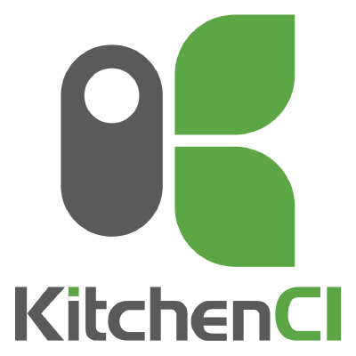
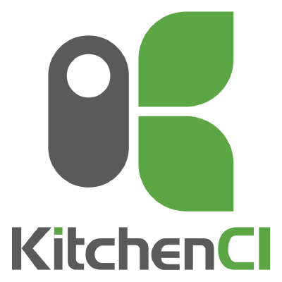

Infrastructure as Code
From Zero to Production
Presenter
Fernando Torres
ftorres@avenuecode.com
Audience
Immutable Infrastructure
Once you instantiate something, you never change it. Instead, you replace it with another instance to make changes or ensure proper behavior
How to Achieve It
- Automated Infrastructure Tools
- Automated Build Pipeline
- Automated Delivery Pipeline
- Code Versioning
Labs
Pre-requirements
Chef Development Kit


 

https://downloads.chef.io/chefdk
Pre-requirements
Docker Engine

https://docs.docker.com/engine/installation/
Or just
curl -sSL https://get.docker.com/ | sh
Lab 0 - Defining the scope
Lab 1 - Creating a Cookbook
Lab 2 - Configuring the Kitchen
Lab 3 - Playing with Kitchen
Lab 4 - BDD: Defining our acceptance tests
Lab 5 - Playing with chefSpec
Cooking a Docker host
-
Recipe
-
Install Docker engine
curl -sSL https://get.docker.com/ | sh
-
Run the ToDo App container (nandotorres/mean-todo)
docker run -d -p 80:3000 --restart=always nandotorres/mean-todo
-
Restart Docker service
service docker restart